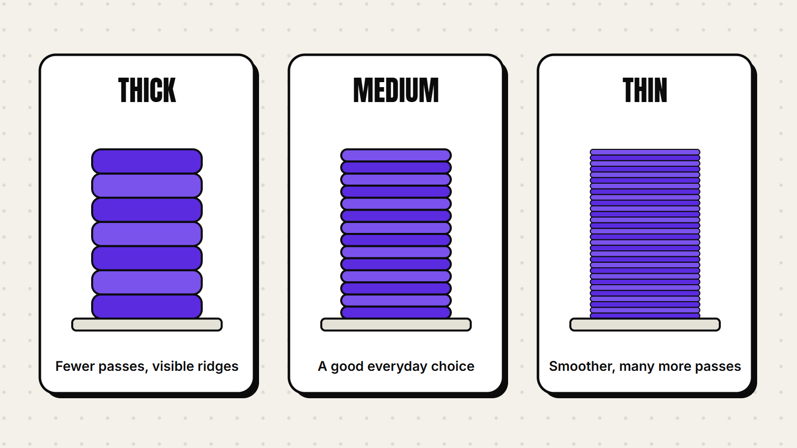
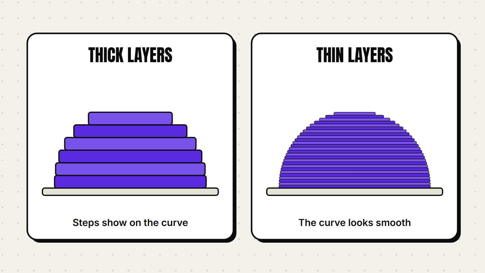

Look closely at a printed vase and you will see fine horizontal lines. Each line is one layer. The thickness of those layers, called layer height, is one of the first settings a printer operator chooses, and one of the most visible. It affects how smooth the part looks, how long it takes, and in some cases how strong it is. Here is what it means and how to ask for the right finish.
A printer builds a part in slices. Layer height is the thickness of each slice, measured in millimetres. On filament printers with a common 0.4 mm nozzle, values between about 0.1 mm and 0.3 mm are typical. Resin printers often use much thinner layers.
Thinner layers mean more layers for the same height. A 100 mm tall object needs 500 layers at 0.2 mm, but 1,000 layers at 0.1 mm.

Thick layers give a textured, ridged surface that catches light. Thin layers look smoother and show fine detail better. The effect is strongest on gentle slopes and rounded tops, where each layer creates a visible step, a pattern sometimes called stair stepping. Vertical walls show it less.
Because every layer is drawn separately, halving the layer height roughly doubles the number of layers and adds substantially to the production time. That can affect the quote. Choose fine layers where they make a visible difference, not by habit.
It can. Layers bond to each other by heat and pressure. Very thick layers relative to the nozzle may bond less well, while very thin layers create many joints. For most everyday parts, wall thickness, orientation, and material matter more than layer height. Keeping layer height comfortably under about three quarters of the nozzle width is a common guideline.
| Finish | Typical filament layer height | Suits |
|---|---|---|
| Draft | About 0.28 mm | Early prototypes, fit tests, large hidden parts |
| Standard | About 0.2 mm | Most organisers, mounts, and everyday pieces |
| Fine | About 0.12 mm | Display pieces, rounded shapes, small lettering |
| Resin | About 0.05 mm or less | Miniatures and very detailed work |
These are common starting points. The best value depends on the machine, nozzle, and model.

Many slicers can use thin layers where the surface curves and thicker layers on straight walls. This keeps the smooth look where it matters and saves time elsewhere. It works well on domes, vases with a rounded shoulder, and figurines with mixed shapes.
A larger nozzle can lay thicker, wider lines, which suits big, sturdy parts. A smaller nozzle gives finer features but takes longer. Layer height is chosen together with nozzle size, not on its own.
Print or request three small domes from the same file at draft, standard, and fine settings. Put them side by side under a desk lamp and look from arm's length, which is how most pieces are seen. Many people find the standard setting good enough for everyday items and save the fine setting for gifts and display work. Keep the samples as a reference for future orders.
Look at the underside too. Faces printed against supports have their own texture, which layer height alone will not change. Knowing that in advance prevents surprises.
Tip: For a first prototype, accept a draft finish. Spend on fine layers once the shape is final.
Yes. Variable layer height is common, with fine layers on curves and thicker ones on straight walls. Ask whether it suits your model.
Only the stepped kind. Strings, blobs, and support marks come from other causes and need their own fixes.
They help text on sloped faces. On a flat top face, the width of the nozzle matters more than the height of the layer.
Choose the standard setting. It balances appearance and production time for most organisers, mounts, and gifts.
Mention the finish you want in the notes of the quote form. To learn how the inside of a part affects strength, read infill and walls.